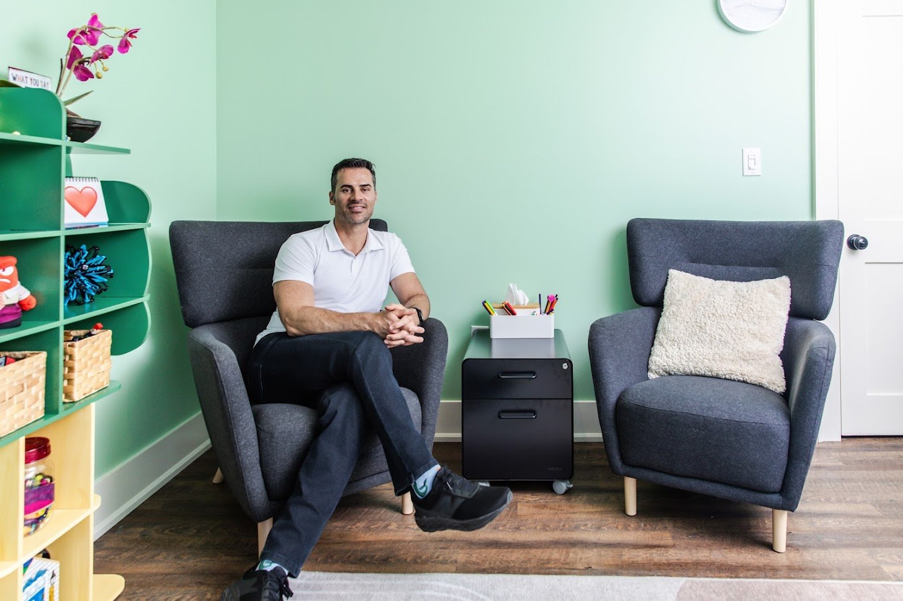
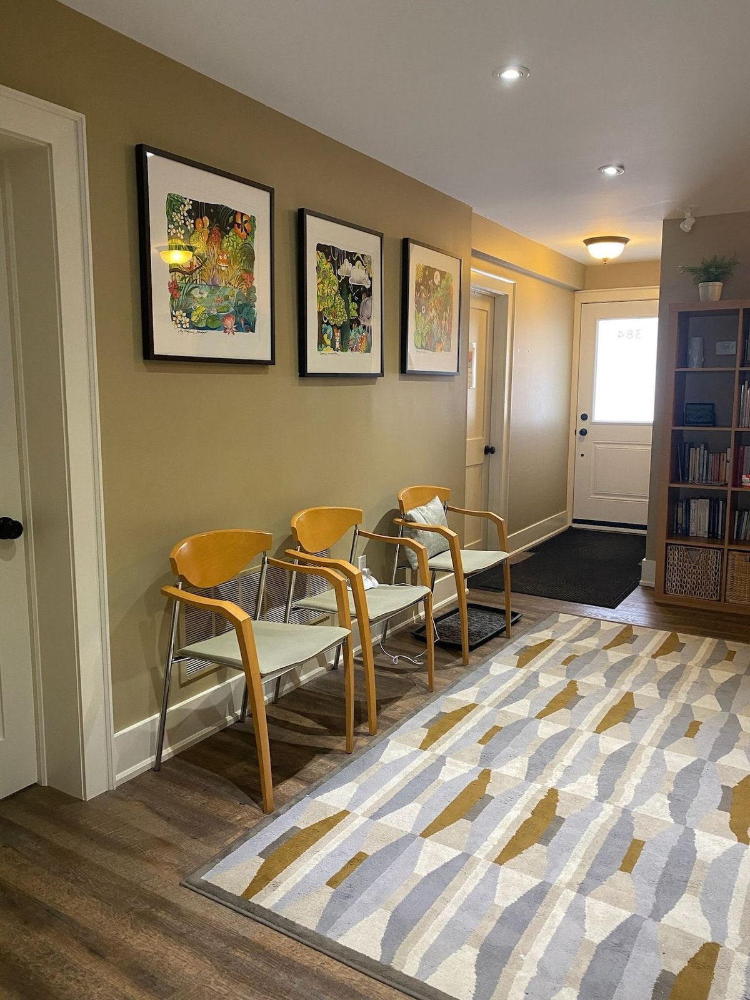

About Jason
Nearly 20 years
walking alongside people
Warm enough to feel safe. Honest enough to help you grow.
 MSW, RSW
MSW, RSW
Hi, I’m Jason
Experienced. Certified. Supportive.
I’ve spent almost two decades as a psychotherapist, guiding teenagers and adults through life’s toughest challenges. In a world of switching industries and changing careers, I’m a rare breed — a long-term, one-career professional who has found immense fulfilment in this work. It’s truly a calling that fits who I am.
I’ve supported clients in diverse settings, including hospital psychiatric units, community counselling agencies, school boards, jails and detention centres, and a private addiction centre overseas. My specialization is in treating low mood, stress, and anxiety, with a particular focus on men’s mental health and providing a supportive space for adolescents.
My goal? To bring my professional experience, training, and skill to folks seeking private psychotherapy — while cultivating more balance and presence as a partner, father, son, and friend.

My approach
Witnessing the human experience, in all its bittersweetness
My practice is built on an authentic mix of compassion, humour, and curiosity. I believe good therapy isn’t just prescriptive — it’s about deeply witnessing the human experience, holding space for realness and rawness, and allowing you to show up exactly as you are.
I apply a trauma lens to our work, recognizing the profound impact past experiences can have on your present well-being — including insights from the landmark Adverse Childhood Experiences (ACEs) study. Together, we map out the internal and external factors at play: how your inner world of thoughts, feelings, and beliefs interacts with your relationships, environment, and life experiences. I also draw heavily on attachment theory to understand how your connections with others shape your mental and emotional health.
How I work
Two things, held together
I’ll never rush you
Trauma, grief, and childhood attachment wounds need a steady, patient space before anything else. We move at a pace your nervous system can trust.
And I won’t let you stay stuck
When you’re ready, I’ll gently challenge the behaviours and mindsets that aren’t serving you — because insight is only the beginning; living differently is the goal.
Education & training
The background behind the care
My education spans both the science of the mind and the practice of therapy — a foundation I’ve built on for nearly two decades.
Master of Social Work (MSW)
Graduate degree
The clinical foundation of my practice as a Registered Social Worker (RSW).
Post-Graduate Diploma in Addictions Therapy
Specialized training
Focused training in supporting clients through substance use and addiction.
Undergraduate Degree in Biopsychology
Bachelor’s degree
The study of how biology and the brain shape thoughts, emotions, and behaviour.
Certified DBT Skills Therapist
Specialized credential
Advanced training in Dialectical Behavioural Therapy skills for emotion regulation and distress tolerance.
Credentials at a glance
You deserve to know who you’re trusting
- Master of Social Work (MSW)
- Registered Social Worker (RSW)
- Post-Grad Diploma, Addictions Therapy
- BSc, Biopsychology
- Certified DBT Skills therapist
- Registered with the OCSWSSW
- In practice since 2007
- Youth (13–18) & adults (19+)
- Trauma & attachment
- CBT · DBT · IFS · EFT · MBSR
- Flamborough Readers’ Choice — Diamond Winner
Verified & registered
Professional memberships
Registered and verified with recognized professional bodies and directories.

The space
A cozy, welcoming sanctuary
I offer in-person sessions out of The Arterie, a shared space in Burlington dedicated to psychotherapy. It’s a beautifully renovated house that feels like a cozy, welcoming sanctuary — home to a wonderful collective of diverse therapists.
For clients across the province, I also provide convenient and secure virtual sessions. When you’re ready, send me a message: I’ll be here waiting for you.
Proudly practising at
Hear from me
Get to know me a little
A few short videos so you can get a feel for who I am and how I work before we ever meet.
Curious whether we’d be a good fit?
That’s exactly what the free meet & greet is for.
Start with a free call